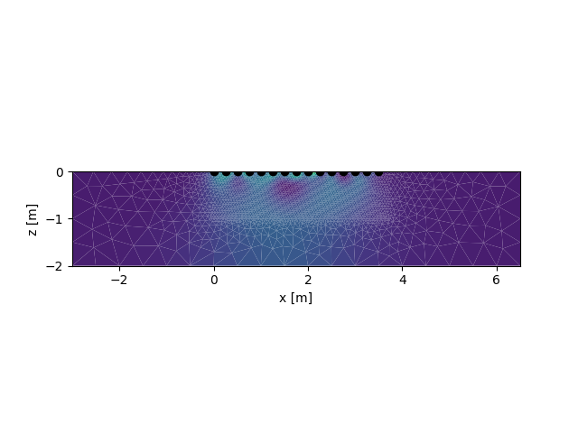
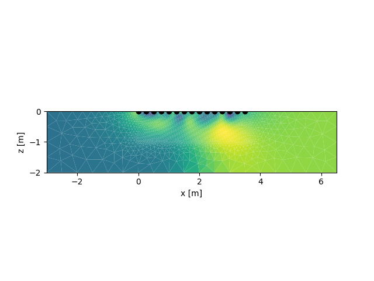
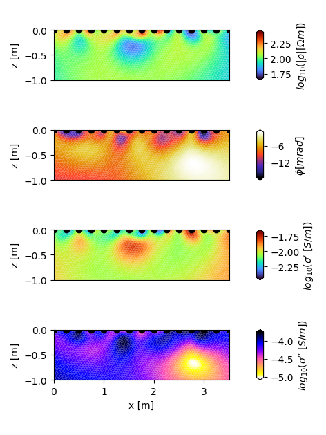
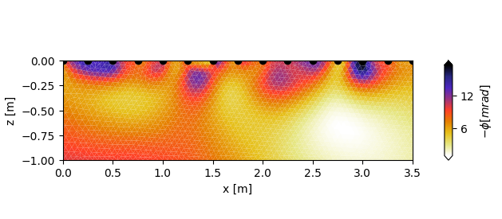
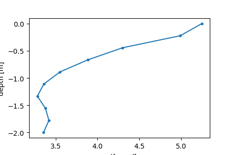
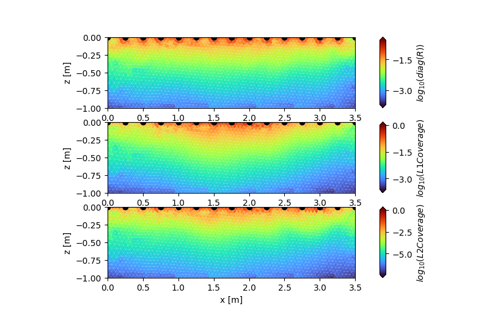

Note
Click here to download the full example code
Plot inversion results from a tomodir
import crtomo
import numpy as np
tdm = crtomo.tdMan(tomodir='tomodir')
Out:
importing tomodir tomodir
This grid was sorted using CutMcK. The nodes were resorted!
Triangular grid found
importing tomodir results
loaded configs: (220, 2)
reading voltages
is robust True
Plot the last magnitude and phase iteration the quick and dirty way. Note that all iterations are stored in the tdm.a[‘inversion’][KEY] list
tdm.show_parset(tdm.a['inversion']['rmag'][-1])
tdm.show_parset(tdm.a['inversion']['rpha'][-1])


Let’s do this the nice way: We want to plot the magnitude, real and imaginary part of the complex conductivity as well as the phase into one plot result.
import matplotlib.pylab as plt
# extract parameter set ids
pid_rmag = tdm.a['inversion']['rmag'][-1]
pid_rpha = tdm.a['inversion']['rpha'][-1]
pid_cre = tdm.a['inversion']['cre'][-1]
pid_cim = tdm.a['inversion']['cim'][-1]
# Note that we can switch out the resistivity magnitude with the conductivity
# magnitude by accessing the parset and taking the inverse values.
rmag = tdm.parman.parsets[pid_rmag]
cmag = 1 / rmag
# Subsequently, we can assign a new parameter set id (cmag) for the
# conductivity magnitude data.
pid_cmag = tdm.parman.add_data(cmag)
We could now plot this parameter set, but commonly we look at rmag, rpha, cre, cim !!!
# Our four datasets can now be plotted using the built-in CRTomo-function
# "plot_elements_to_ax". We can use the "converter-parameter" to convert
# the conductivity data to the log10-scale:
fig, axes = plt.subplots(4, 1, figsize=(12 / 2.54, 16 / 2.54), sharex=True)
ax = axes[0]
tdm.plot.plot_elements_to_ax(
cid=pid_rmag,
ax=ax,
plot_colorbar=True,
cmap_name='turbo',
xmin=-0.0,
xmax=3.5,
zmin=-1.0,
cblabel=r'$log_{10}(|\rho| [\Omega m])$',
converter=np.log10,
)
ax.get_xaxis().set_visible(False)
ax.set_ylabel('z [m]')
ax = axes[1]
tdm.plot.plot_elements_to_ax(
cid=pid_rpha,
ax=ax,
plot_colorbar=True,
cmap_name='CMRmap',
xmin=-0.0,
xmax=3.5,
zmin=-1.0,
cblabel=r'$\phi [mrad]$',
)
ax.get_xaxis().set_visible(False)
ax.set_ylabel('z [m]')
ax = axes[2]
tdm.plot.plot_elements_to_ax(
cid=pid_cre,
ax=ax,
plot_colorbar=True,
cmap_name='turbo',
xmin=-0.0,
xmax=3.5,
zmin=-1.0,
cblabel=r"$log_{10}(\sigma'~ [S/m])$",
converter=np.log10,
)
ax.get_xaxis().set_visible(False)
ax.set_ylabel('z [m]')
ax = axes[3]
tdm.plot.plot_elements_to_ax(
cid=pid_cim,
ax=ax,
plot_colorbar=True,
cmap_name='gnuplot2_r',
xmin=-0.0,
xmax=3.5,
zmin=-1.0,
cblabel=r"$log_{10}(\sigma''~ [S/m])$",
converter=np.log10,
)
ax.set_ylabel('z [m]')
ax.set_xlabel('x [m]')
fig.tight_layout()
fig.savefig('crinv_cmaps.jpg', dpi=300)
# For clarity reasons, it is advisable to plot the parameters in different
# colors - here, we used the cmaps 'turbo' for Magnitude and Real part of
# the conductivity, 'CMRmap' for the phase and 'gnuplot2_r'
# for the imaginary part of the conductivity.

With the converter parameter, measurement data can be changed on the fly with any given function. As an example, lets change the sign of the phase values with the function “converter_change_sign” (note that we also swap the colormap).
from crtomo.plotManager import converter_change_sign
fig, ax = plt.subplots(1, 1, figsize=(16 / 2.54, 7 / 2.54))
tdm.plot.plot_elements_to_ax(
cid=tdm.inv_last_rpha_parset(),
ax=ax,
cmap_name='CMRmap_r',
plot_colorbar=True,
xmin=-0.0,
xmax=3.5,
zmin=-1.0,
cblabel=r'$-\phi [mrad]$',
converter=converter_change_sign,
)
# Other converters:
# from crtomo.plotManager import converter_pm_log10
# from crtomo.plotManager import converter_log10_to_lin

Sometimes, it can also be of interest to only look at the slice or area of the data. This can be achieved with the extract_along_line or extract_polygon_area functions. Here, we create a depth cut at x = 4 m, down to 2 m depth.
pid_pha = tdm.a['inversion']['rpha'][-1]
results = tdm.parman.extract_along_line(pid_pha, [4, -2], [4, 0])
# x y value
print(results)
import pylab as plt
fig, ax = plt.subplots(figsize=(12 / 2.54, 8 / 2.54))
ax.plot(-results[:, 2], results[:, 1], '.-')
ax.set_xlabel(r'$-\phi [mrad]$')
ax.set_ylabel('depth [m]')

Out:
[[ 4. -2. -3.35670114]
[ 4. -1.77777778 -3.4210186 ]
[ 4. -1.55555556 -3.37871909]
[ 4. -1.33333333 -3.28278995]
[ 4. -1.11111111 -3.35931659]
[ 4. -0.88888889 -3.55058503]
[ 4. -0.66666667 -3.8834424 ]
[ 4. -0.44444444 -4.29864407]
[ 4. -0.22222222 -4.98983669]
[ 4. 0. -5.24516344]]
Resolution assessment: Note that you must explicitly tell CRTomo to compute these measures. This can be done using the mswitch: (note that the following line only works if you actually invert – here we load from an existing tomodir!)
tdm.crtomo_cfg.set_mswitch('res_m', True)
from crtomo.plotManager import converter_abs_log10
fig, axes = plt.subplots(3, 1, figsize=(20 / 2.54, 13 / 2.54))
ax = axes[0]
tdm.plot.plot_elements_to_ax(
cid=tdm.a['inversion']['resm'],
ax=ax,
cmap_name="turbo",
plot_colorbar=True,
xmin=-0.0,
xmax=3.5,
zmin=-1.0,
cblabel=r"$log_{10}(diag(R))$",
converter=converter_abs_log10,
)
ax = axes[1]
tdm.plot.plot_elements_to_ax(
cid=tdm.a['inversion']['l1_dw_log10_norm'],
ax=ax,
cmap_name="turbo",
plot_colorbar=True,
xmin=-0.0,
xmax=3.5,
zmin=-1.0,
cblabel=r"$log_{10}(L1 Coverage)$",
# converter=np.log10,
)
ax = axes[2]
tdm.plot.plot_elements_to_ax(
cid=tdm.a['inversion']['l2_dw_log10_norm'],
ax=ax,
cmap_name="turbo",
plot_colorbar=True,
xmin=-0.0,
xmax=3.5,
zmin=-1.0,
cblabel=r"$log_{10}(L2 Coverage)$",
# converter=np.log10,
)
